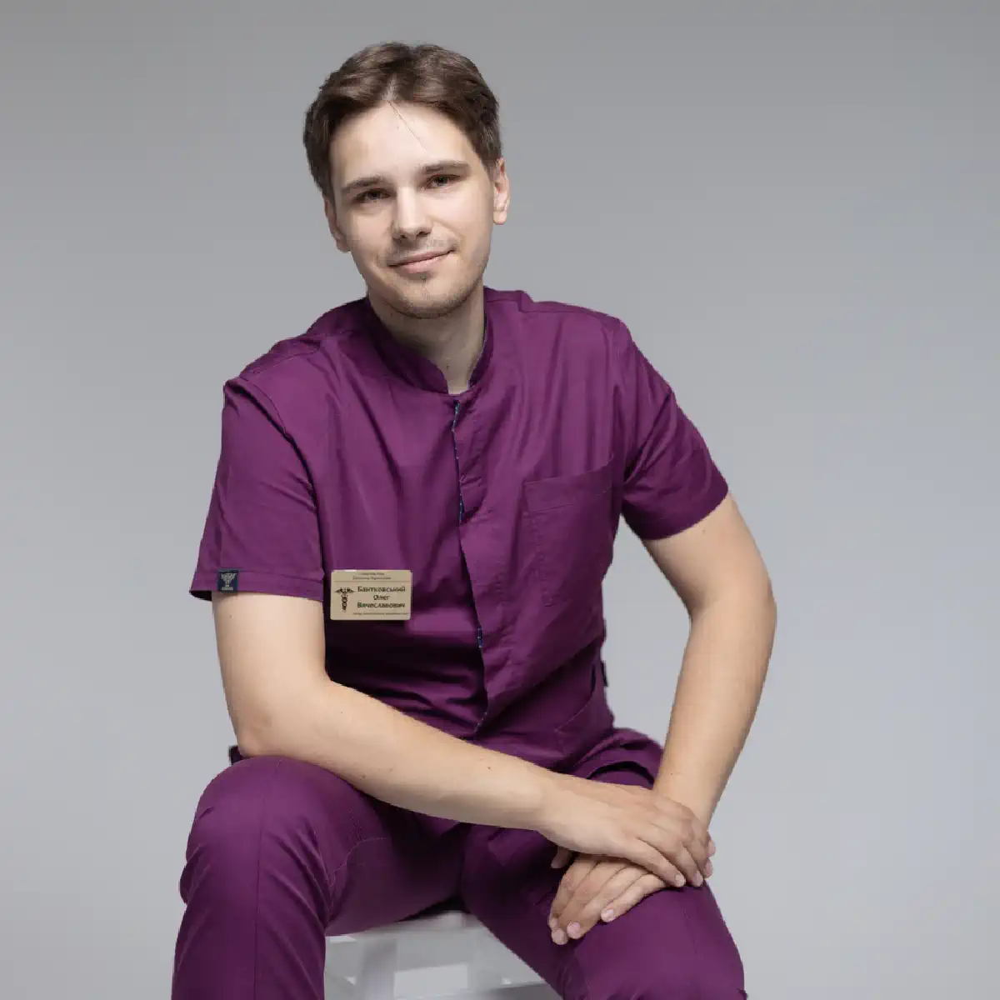

+38(068) 79 72 782
+38(068) 79 72 782Кодирование от алкоголизма в Запорожье
Шанс на новую жизнь


Бесплатная консультация, работаем круглосуточно 24/7
Шанс на новую жизнь
Алкоголизм — это серьёзное и разрушительное заболевание, которое затрагивает все аспекты жизни человека. Оно негативно влияет на физическое здоровье, приводя к поражению печени, поджелудочной железы, сердца и нервной системы; психическое здоровье, вызывая депрессию, тревожность, агрессию и эмоциональную нестабильность; а также разрушает семейные отношения, ухудшает карьерные перспективы и подрывает социальный статус. Последствия алкоголизма ощущаются не только самим человеком, но и его близкими, создавая круг проблем и стресса, из которого трудно выбраться без профессиональной помощи.
Если вы или ваш близкий столкнулись с этой проблемой, важно знать, что выход есть. Кодирование от алкоголизма в Запорожье — это современный и эффективный метод лечения, который помогает разорвать порочный круг зависимости и сделать первый решающий шаг к трезвой жизни. Этот метод основан на достижениях современной наркологии и психотерапии и позволяет сформировать стойкое отвращение к спиртным напиткам. Суть кодирования заключается в комплексном воздействии на организм и психику пациента. Метод может включать медикаментозные средства, которые вызывают отрицательную реакцию при употреблении алкоголя, психотерапевтическое сопровождение для формирования новой мотивации и закрепления трезвого образа жизни, а также поддерживающие процедуры, способствующие восстановлению здоровья после длительного употребления спиртного.
Важно понимать, что кодирование — это не магическое решение, а мощный инструмент, который работает только при комплексном подходе и желании пациента изменить свою жизнь. В сочетании с медицинским наблюдением, психотерапией и поддержкой близких этот метод позволяет значительно повысить шансы на длительное выздоровление и возвращение к полноценной, здоровой жизни.
Кодирование от алкоголизма — это не «чудо-таблетка», а научно обоснованная и тщательно разработанная медицинская процедура, направленная на преодоление алкогольной зависимости. Её основная цель заключается в создании мощного барьера на физическом и психологическом уровнях, который делает употребление алкоголя крайне неприятным или полностью невозможным. Этот метод работает одновременно с телом и психикой пациента, обеспечивая комплексное воздействие и повышая шансы на длительное выздоровление.
| Кодирование уколом Запорожье | Цена |
|---|---|
| Инъекция препарата Дисульфирам (3 месяца) | От 4000 грн |
| Инъекция препарата Дисульфирам (6 месяцев) | От 6000 грн |
| Инъекция препарата Дисульфирам (12 месяцев) | От 8000 грн |
| Инъекция препарата Эспераль (6 месяцев) | От 6000 грн |
| Инъекция препарата Эспераль (12 месяцев) | От 8000 грн |
| Инъекция препарата Тетолонг (6 месяцев) | От 8000 грн |
| Инъекция препарата Тетолонг (12 месяцев) | От 12000 грн |
| Инъекция препарата Вивитрол (12 месяцев) | От 12000 грн |
| Инъекция препарата Аквилонг (12 месяцев) | От 12000 грн |
| Авторское трехэтапное кодирование уколом (1-5 лет) | От 12000 грн |
| Раскодировка от алкоголизма (укола) | От 6000 грн |
| Хирургическое кодирование от алкоголизма Запорожье | Цена |
|---|---|
| Имплантация (подшивка) капсулы Эспераль (12 месяцев) | От 10000 грн |
| Имплантация (подшивка) капсулы Эспераль (18 месяцев) | От 12000 грн |
| Имплантация (подшивка) капсулы Эспераль (24-36 месяцев) | От 15000 грн |
| Имплантация (подшивка) геля Дисульфирам (12 месяцев) | От 10000 грн |
| Имплантация (подшивка) геля Дисульфирам (18 месяцев) | От 12000 грн |
| Имплантация (подшивка) геля Дисульфирам (24-36 месяцев) | От 15000 грн |
| Раскодировка от алкоголизма (хирургически) | От 8000 грн |
| Психотерапевтическое кодирование от алкоголизма Запорожье | Цена |
|---|---|
| Кодирование по методу Довженко (1-5 лет) | От 10000 грн |
| Кодирование гипнозом (1-5 год) | От 10000 грн |
| Авторское кодирование от алкоголизма гипнозом (5 лет) | От 12000 грн |
| Трехэтапное кодирование от алкоголизма гипноз + метод Довженко (5-10 лет) | От 20000 грн |
| Психофармакологическое кодирование от алкоголизма (1-5 лет) | От 20000 грн |
| Кодирование от алкоголизма лазером | От 10000 грн |
| Таблетированное кодирование от алкоголизма | Цена |
|---|---|
| Кодирование от алкоголизма Эспераль таблетки | От 1400 грн |
| Кодирование от алкоголизма Тетурам таблетки | От 1400 грн |
| Кодирование от алкоголизма Дисульфирам таблетки | От 1400 грн |
| Кодирование от алкоголизма Капли Мидзо | От 1400 грн |
Выбор места для кодирования от алкоголизма — это серьёзный и ответственный шаг, который напрямую влияет на эффективность лечения и безопасность пациента. Очень важно доверять этот процесс профессионалам с многолетним опытом работы и соответствующей лицензией на проведение медицинских процедур. В Запорожье одной из ведущих организаций в сфере лечения алкогольной зависимости является медицинская служба UmbrellaPlus. Наши специалисты — опытные врачи-наркологи и психотерапевты — строго следуют современным протоколам лечения, используя проверенные и безопасные методики. Мы обеспечиваем полную анонимность, что позволяет пациенту получить помощь без страха за свою репутацию или раскрытие личной информации.
Перед проведением процедуры проводится детальное обследование. Врач собирает анамнез, оценивает общее состояние организма, измеряет жизненные показатели и проверяет наличие хронических заболеваний или возможных противопоказаний к кодированию. Этот этап необходим для того, чтобы подобрать индивидуальную методику кодирования, которая будет максимально эффективной и безопасной именно для конкретного пациента. Мы предлагаем несколько методов кодирования: медикаментозное, психотерапевтическое и комбинированное. Каждая методика подбирается с учётом психологического и физического состояния пациента, длительности зависимости и личных предпочтений. Такой персонализированный подход позволяет достичь стабильного результата и минимизировать риск рецидива.
Укол от алкоголизма является одним из наиболее востребованных и проверенных методов медикаментозного кодирования, который помогает пациенту разорвать порочный круг зависимости и сделать первый шаг к трезвой жизни. Препарат вводится внутривенно или внутримышечно, и его действие начинается практически сразу, обеспечивая надежную защиту на весь выбранный срок. Преимущества этого метода:
Укол от алкоголизма — это современный, удобный и эффективный инструмент, который помогает пациенту не только физически предотвратить употребление спиртного, но и психологически укрепить мотивацию к трезвости. С его помощью человек получает возможность стабилизировать своё здоровье, восстановить социальные и семейные отношения, а также уверенно двигаться к полноценной жизни без алкоголя.
Процесс кодирования от алкоголизма — это комплексная медицинская процедура, которая всегда проводится по строгому протоколу и проходит в несколько тщательно продуманных этапов, обеспечивая максимальную безопасность и эффективность лечения.
Каждый этап кодирования от алкоголя тщательно планируется и выполняется индивидуально, с учётом особенностей организма и психологических факторов пациента. Такой подход позволяет не только безопасно блокировать тягу к алкоголю, но и формировать устойчивую мотивацию к трезвому образу жизни, создавая прочную основу для долгосрочного выздоровления.
Употребление спиртного после кодирования может вызвать сильную токсическую реакцию организма, которая иногда представляет прямую угрозу жизни. Симптомы включают резкое повышение артериального давления, сильное сердцебиение, тошноту, рвоту, головокружение, слабость и сильное чувство тревоги. В тяжёлых случаях возможна потеря сознания или развитие острых осложнений, поэтому при первых признаках реакции необходимо немедленно обратиться за медицинской помощью.
Кодирование от алкоголя в Запорожье преследует несколько ключевых и взаимосвязанных задач, каждая из которых направлена на комплексное восстановление организма и формирование устойчивой трезвости.
Таким образом, кодирование в Запорожье представляет собой комплексную стратегию, направленную на восстановление здоровья, укрепление психоэмоционального состояния, формирование устойчивой мотивации к трезвости и создание надёжного барьера против повторного употребления алкоголя. В сочетании с психотерапевтической поддержкой и социально-адаптационными программами эта методика позволяет пациенту безопасно и эффективно вернуться к полноценной, здоровой жизни.
Да, в экстренных случаях существует процедура «раскодирования», во время которой действие медикамента нейтрализуется под контролем квалифицированного врача. Это необходимо при возникновении серьёзных побочных эффектов, непредвиденных медицинских показаний или когда пациенту требуется смена метода лечения. Раскодирование проводится только в медицинском учреждении под наблюдением нарколога и с полным контролем состояния пациента.
Медикаментозное кодирование формирует прежде всего физический барьер, делая употребление алкоголя крайне неприятным или опасным для организма. Однако психологическая тяга может сохраняться, особенно у людей с длительной зависимостью или глубокой привычкой к спиртному. Чтобы полностью устранить психологическую потребность в алкоголе, рекомендуется сочетать кодирование с психотерапевтическими методами — гипнозом, когнитивно-поведенческой терапией и психологической поддержкой. Такой комплексный подход позволяет не только блокировать физическую реакцию на спиртное, но и укрепить устойчивую мотивацию к трезвому образу жизни.
Процедура имеет ряд противопоказаний, поэтому предварительная консультация с врачом обязательна. Кодирование не проводится при серьёзных заболеваниях сердца, печени, почек, психических расстройствах, а также во время беременности и кормления грудью. Врач оценивает индивидуальное состояние пациента, наличие хронических заболеваний и возможные риски, чтобы подобрать максимально безопасный и эффективный метод.
Помимо укола, существуют и другие эффективные методы кодирования от алкоголизма, каждый из которых имеет свои особенности и преимущества, позволяя подобрать оптимальный подход в зависимости от состояния пациента, длительности зависимости и личных предпочтений.
1. «Торпедо» (подшивка). Это метод медикаментозного кодирования, при котором под кожу пациента имплантируется специальная капсула с действующим веществом. Препарат постепенно выделяется в кровь, создавая длительный и надежный физиологический барьер против употребления алкоголя. Длительность действия подшивки может варьироваться от нескольких месяцев до нескольких лет, в зависимости от выбранного препарата и индивидуальных особенностей организма. Этот метод особенно эффективен для пациентов с хронической зависимостью, так как обеспечивает постоянное блокирующее действие и минимизирует риск рецидива.
2. Кодирование гипнозом. Психотерапевтический метод кодирования, который работает с подсознанием пациента. Во время сеанса гипноза специалист создаёт в психике человека устойчивую ассоциативную связь между употреблением алкоголя и негативными последствиями. Пациент получает установку на трезвость, формируется мотивация к отказу от спиртного и устраняется психологическая тяга к алкоголю.
3. Комбинированный метод кодирования. Наиболее эффективным подходом считается комбинация медикаментозного и психотерапевтического кодирования. Такой метод воздействует сразу на физиологический и психологический уровень: организм получает защиту от возможных последствий употребления алкоголя, а психика формирует устойчивую установку на трезвость. Комбинированный подход значительно повышает вероятность длительного сохранения трезвости и снижает риск рецидивов.
Выбор метода кодирования всегда индивидуален и зависит от состояния здоровья пациента, длительности зависимости, наличия противопоказаний и личных предпочтений. Квалифицированный нарколог проводит предварительную консультацию, оценивает риски и подбирает оптимальный вариант, обеспечивая безопасность и максимальную эффективность процедуры.
Кодирование от алкоголизма — это эффективный и безопасный метод, который помогает сделать первый, самый трудный шаг на пути к трезвости. Он дает человеку время и возможность восстановить здоровье, наладить отношения и пересмотреть свою жизнь. Если вы находитесь в Запорожье и ищете надежную и анонимную помощь, UmbrellaPlus готова предложить вам свои услуги. Наркологи подберут оптимальный метод кодирования и окажут необходимую поддержку на каждом этапе выздоровления. Сделайте шаг к новой, здоровой и полноценной жизни!
Чтобы узнать больше и записаться на консультацию, звоните по телефону: 050-021-69-57.
Да, мы строго соблюдаем полную конфиденциальность на всех этапах лечения. Информация о пациенте, диагнозе и прохождении терапии не передаётся третьим лицам. Обращение к нам не влечёт постановку на учёт. Вы можете быть уверены в безопасности и анонимности.
Программа лечения разрабатывается индивидуально после консультации со специалистом. Учитываются вид зависимости, её длительность, физическое и психологическое состояние пациента. Такой подход позволяет повысить эффективность терапии и снизить риск срыва. Мы не используем шаблонные решения.
Да, мы сопровождаем пациентов и после основного курса лечения. Проводятся консультации, рекомендации по адаптации и профилактике рецидивов. При необходимости возможна дальнейшая психологическая поддержка. Это помогает сохранить результат и вернуться к полноценной жизни.
Александр

Решила сделать укол от алкоголизма по рекомендации подруги, которая проходила эту процедуру в этом же центре. Я сомневалась, но врачи всё объяснили, успокоили. После укола не чувствую тяги к алкоголю, хотя раньше сложно было представить день без выпивки. Сейчас наслаждаюсь трезвостью, чувствую себя намного лучше.
Анонимно
Дуже довго не міг самостійно позбавитися залежності, тому зважився на підшивку. Процедура пройшла успішно, і з того часу я навіть не думаю про спиртне. Страх перед можливими наслідками допомагає триматися на плаву, а підтримка фахівців – величезна підмога у цьому нелегкому шляху. Центр надає як фізичну, а й моральну допомогу. Вдячний їм за другий шанс.
Анонимно
Я никогда не думал, что психологическое воздействие может настолько сильно повлиять на мою жизнь. Врач помог осознать всю серьезность ситуации, и теперь алкоголь не вызывает у меня никакого интереса. Процедура безопасна и эффективна, рекомендую тем, кто хочет по-настоящему изменить свою жизнь.
Анонимно
Я прошла кодирование гипнозом, и это было удивительное переживание. Во время сеанса я почувствовала глубокое расслабление, а потом – будто внутри что-то изменилось. Сейчас я свободна от алкоголя и наслаждаюсь этим состоянием. Благодарю центр за профессионализм и заботу! Отдельная благодарность Станиславу Вячеславовичу
Анонимно
Чесно кажучи, боявся рецидиву, але з процедури минуло півроку, і я навіть не думаю про випивку. Життя почало змінюватися на краще. Дякуємо лікарям за підтримку та мотивацію!
Анонимно
Після багаторічної боротьби із залежністю вирішила звернутись в клінку. Спочатку переживала, але лікарі дуже докладно розповіли про процес та можливі наслідки. Зараз я не п’ю вже 8 місяців і почуваюся чудово. Я така щаслива, що знайшла цей центр і знайшла контроль над своїм життям.
Анонимно
Метод Долженко казался мне странным, но я решил попробовать. Оказалось, что это не просто кодировка, а глубокая работа с психикой. Это позволило мне кардинально изменить отношение к алкоголю. Уже год я не пью, и не планирую возвращаться к прежней жизни. Простое человеческое спасибо!
Анонимно
Гипноз помог мне избавиться от постоянной тяги к алкоголю. После сеансов я заметила, что стала спокойнее и увереннее в себе. Теперь алкоголь меня больше не интересует. Центр мне очень помог, и я благодарна за их заботу и поддержку.
Номер телефона:
+380 (68) 797 27 82
+380 (50) 021 69 57
Адрес наркологического центра вашего города уточняйте по
телефону
Работаем в: Киеве, Одессе, Львове, Харькове, Днепре,
Запорожье, Черкассах, Чугуеве, Черноморске, Каменском
Telegram: t.me/umbrellaplus
График работы: Круглосуточно